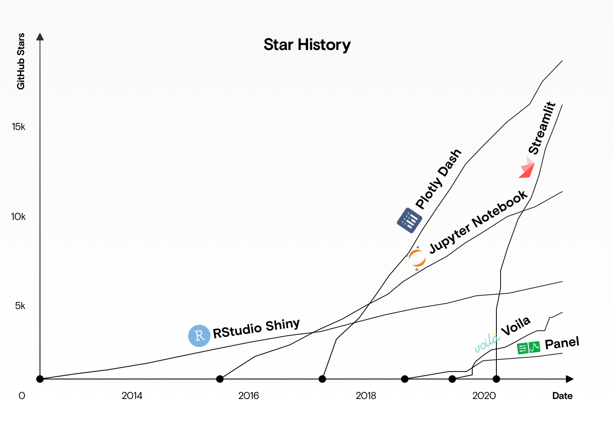
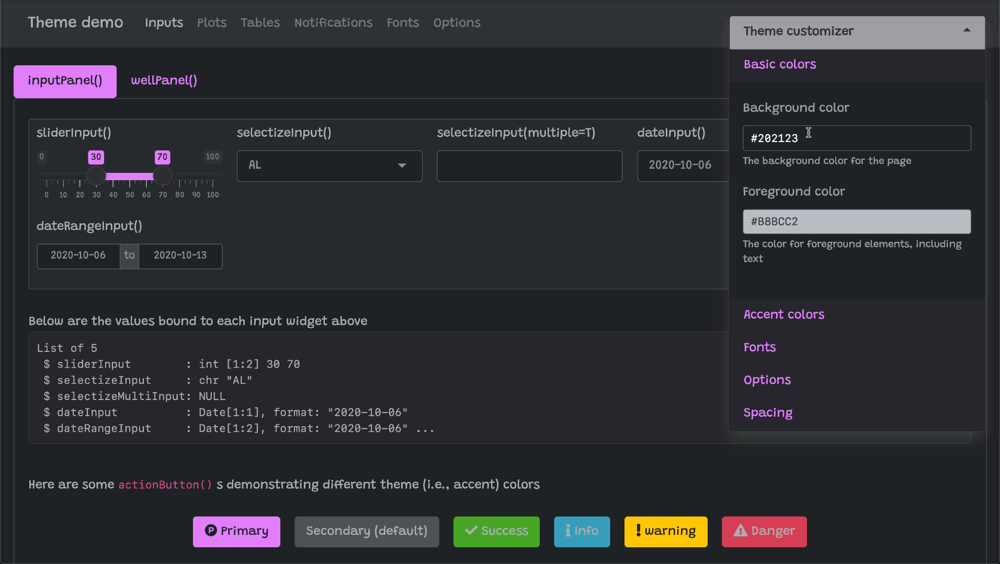
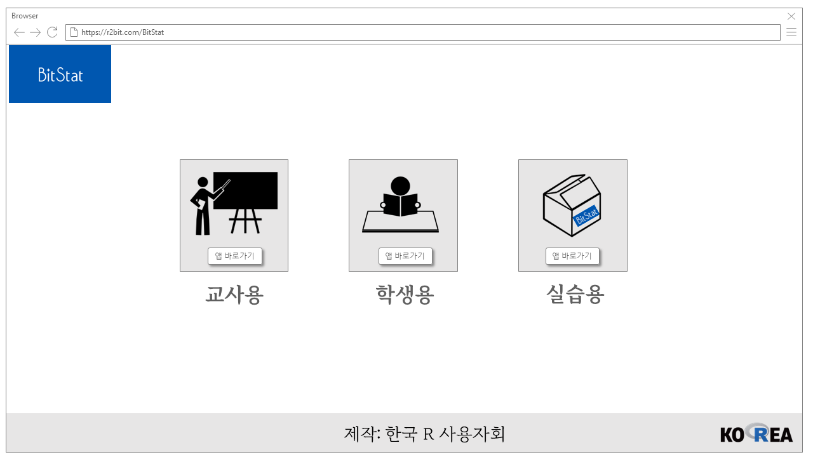
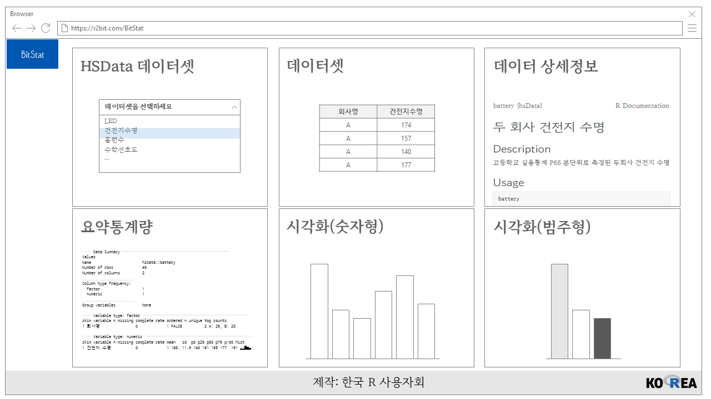
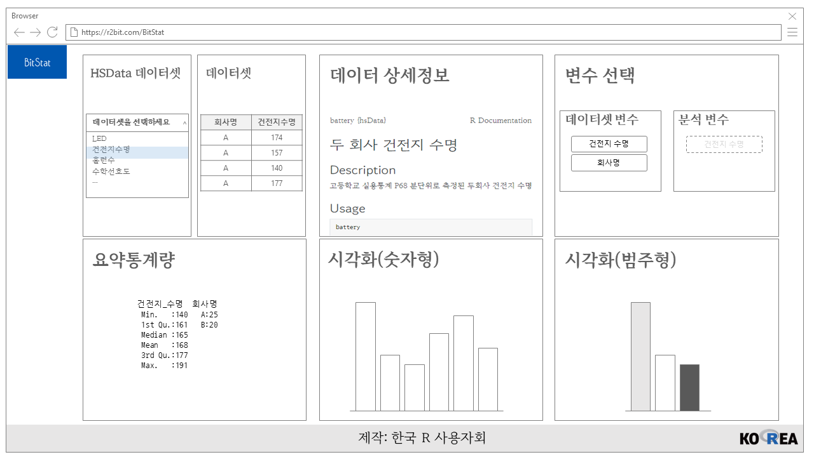
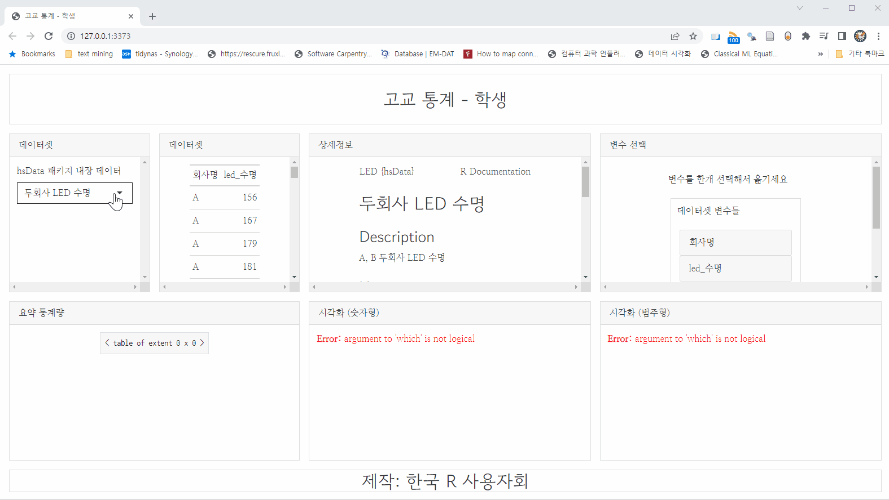

shinyuieditor::launch_editor(app_loc = "shiny앱명칭")1 최근 개발 추세
로우코드는 필요한 부품을 간단한 명령으로 조합하여 시스템을 만드는 개발 방법으로, 복잡한 코딩 과정을 단순화해서 소프트웨어를 빠르게 개발 및 배포하도록 만든 일종의 개발 환경으로 소개되고 있다.
Shiny 앱은 2012년 처음 소개된 이후 약 10년의 세월이 흐르며 다양한 프레임워크가 등장하여 서로 경쟁하고 있다. 이 분야를 개척한 것은 Shiny가 처음이지만 R을 기본언어로 하다보니 파이썬이나 자바스크립트와 같은 다른 언어을 많이 사용하고 있는 다른 반응형 대쉬보드 프레임워크가 등장하다 보니 GitHub 별점수에서 상대적으로 밀리고 있는 것으로 보인다. React 기반한 파이썬 프레임워크 Plotly Dash, 파이썬 Streamlit이 사용자면에서 최근들어 급증하고 있는데 최근 추세를 반영하고 있다고 볼 수 있다.

- 프로그램 개발 시간 단축
- 모든 소스 코드를 작성하지 않고, 앱을 조합하여 시스템을 구축 하여 개발 기간을 단축
- 개발비 절감
- 개발 기간을 줄이는 효과로 프로그래머의 인력이 감소 개발에 들어 가는 인건비를 절감 하는 효과
- 전문 개발자의 경우 필요에 따라 자동화와 불필요한 요소 생략 등을 통해 작업 효율성을 대폭 향상할 수 있다. 이런 효율성 향상은 결국 비용감소
- 오류가 줄어든다
- 프로그램밍을 직접 수행하는 부분이 적어지는 만큼 실수가 줄어 든다.
- 사람이 작성하는 코드의 양이 적어지면서 오류 확률이 줄어 든다.
- 그 결과 버그 수정 등에 걸리는 시간 단축과 비용 경감에 효과가 있다.
- 인력 확보가 비교적 쉽다.
- 엔지니어가 전문적인 실력을 갖추지 않았더라고 개발 작업이 가능.
- 숙련된 엔지니어에 대한 의존성이 줄어 든다.
- 자유도가 낮다
- 대규모 개발에 사용의 어려움으로 인해 단순 구조 및 단일 비즈니스 프로세스에 적합하다.
- 개발 툴에 따라서 가능 한 기능이 다르기 때문에 각 툴에만 의존 하게 되는 단점
- 프로그램의 창의성 악화
- 로우코드에 의존하게 되면 시스템을 새로 구축 하는 프로그래머가 점점 줄어 들어 창의성을 발휘하여 개발하는 경우가 적어 질 것이다.
- 보안의 취약
- 간단한 기능을 만들때는 기본적인 보안 관리에 소홀 할 수 있다.
- 빠른 속도와 낮은 비용에만 너무 초점을 맞추면 관리 부족과 보안 취약점이 들어 날 수 있다.
시장에서 다음 시스템이 인기를 끌고 있다.
- OutSystems
- mendix
- ServiceNow
- Kintone
- KISSFLOW
- Appian
- Boomi Flow
2 Shiny 로우코드 패키지
Shiny가 10년이라는 오랜 시간을 거치면서 최근들어 새로운 시도가 늘고 있고 몇가지를 소개하게 되면 로우코드 Shiny 앱 개발을 가능하게 하는 패키지가 속속 도입되며 고품질 Shiny 앱을 빠른 시간내에 개발하여 생산성을 높일 수 있게 되었다.
2.1 shinyuieditor
shinyuieditor는 2022-08-31 현재 알파버젼이지만 기존 Shiny UI 개발에 많은 노력이 든 것에 비하면 빠르고 쉽게 ui.R UI 부분을 제작할 수 있다.
예를 들어 Drag and Drop 으로 UI 구성요소를 추가하는 것도 가능하다.
그외에도 Shiny 앱 개발에 필요한 다양한 다음 작업을 수행할 수 있다.
- UI 구성요소 이동
- UI 구성요소 선택
- UI 구성요소 삭제
- UI 구성요소 설정사항 변경
- 행/열 폭 확인
- 행/열을 레이아웃 격자에 추가/삭제
- 행/열 폭 길이조정
- 변경사항 Undo/Redo 기능
동영상 사용방법은 shinyuieditor How to 참고
shinyuieditor 패키지 명령어는 몇개 없는데 Shiny 앱 UI 제작을 위해 launch_editor() 함수를 사용해서 제작한다. 첫 선택사항에 따라 “shiny앱명칭” 디렉토리 아래 app.R 혹은 ui.R, server.R 이 생성된 것을 확인할 수 있다.
UI 제작이 마무리되면 bslib 패키지로 외양을 가꾸고 server.R 서버 코드를 작성하면 간단히 Shiny 앱 개발이 마무리된다.
2.2 Dashboard-Builder
Peter Gandenberger, “Dashboard-Builder: Building Shiny Apps without writing any code”, rstudio::conf(2022), 바로가기
Peter Gandenberger가 최근에 개발한 Dashboard Builder는 대쉬보드를 키보드 입력없이 마우스만 사용해서 간단히 개발할 수 있다. Dashboard Builder 는 gridstackeR 패키지 기반하고 있다.
로우코드 대쉬보드 개발 작업흐름은 다음과 같다.
- 데이터 불러오기
- 대쉬보드 구성요소 생성
- 대쉬보드 내보내기
- 후속작업을 통해 기능추가 및 개선 작업 수행
2분 22초면 대쉬보드를 뚝딱 제작할 수 있는 사례를 다음 동영상을 통해 확인할 수 있다.
2.3 bslib 외양
Shiny 앱의 외양 Look-and-Feel 을 수월히 제작할 수 있게 해주는 패키지가 bslib로 이를 통해서 Shiny 앱 개발 생산성을 크게 높일 수 있다.

bslib 패키지 bs_theme_preview() 함수를 통해 Shiny 외양을 원하는 대로 제작할 수 있다. 다양한 외양 관련 사항을 지정하면 관련 사항이 코드로 떨어지게 되어 이를 복사하여 Shiny 앱에 CSS 나 코드에 직접 넣어 사용할 수 있다.
bs_theme_preview()
# Warning: package ‘bslib’ was built under R version 4.2.1
#
# Attaching package: ‘bslib’
#
# The following object is masked from ‘package:utils’:
#
# page
#
# Warning: package ‘rlang’ was built under R version 4.2.1
# Using libcurl 7.64.1 with Schannel
# This Font Awesome icon ('exclamation-triangle') does not exist:
# * if providing a custom `html_dependency` these `name` checks can
# be deactivated with `verify_fa = FALSE`
#
# Listening on http://127.0.0.1:4337
#
# #### Update your bs_theme() R code with: #####
# bs_theme_update(theme, primary = "#6C8FC4", base_font = font_collection("system-ui",
# "-apple-system", "Segoe UI", font_google("Roboto"), "Helvetica Neue",
# "Arial", font_google("Noto Sans"), "Liberation Sans", "sans-serif",
# "Apple Color Emoji", "Segoe UI Emoji", "Segoe UI Symbol",
# "Noto Color Emoji"))2.4 데이터 패키지
데이터를 별도 패키지로 묶어 관리하게 되면 Shiny 앱을 개발할 때 별도 데이터 패키지로 묶어 필요한 경우 Shiny 앱에서 불러 사용하게 되면 관리도 그렇고 개발시간도 단축시킬 수 있다.
- 통계청 통계교육원 실용통계 교과서에 실린 데이터를 묶어낸 R 데이터 패키지:
hsData
3 고교 통계 패키지
한국 R 사용자회 GitHub bitSTat-HS 저장소에 로우코드 개발방법론을 Shiny 앱개발에 적용하여 고교 통계 패키지를 개발하고 있다.
3.1 UI 화면 설계
파워포인트, figma 등 화면설계 도구를 사용해서 Shiny UI를 작성한다.



3.2 shinyuieditor
shinyuieditor 패키지를 사용해서 Shiny 앱 UI 부분을 제작한다.
3.3 서버 구현
마지막으로 server.R 코드를 작성하여 hsData 데이터 패키지에 포함된 데이터셋을 선택할 경우 해당 통계 분석결과를 자동으로 실행되도록 구현한다.
3.4 배포
shinyapps.io에 RStudio 에서 버튼을 몇번 눌러 배포한다.
3.5 실행화면
